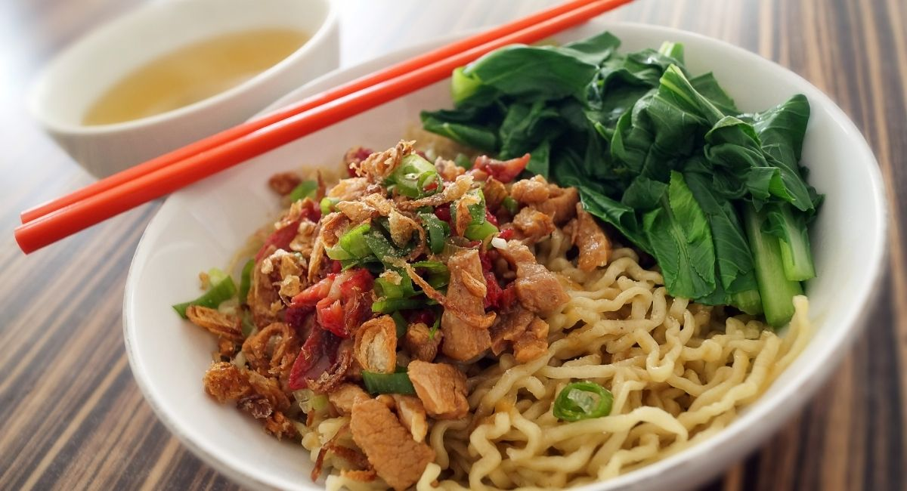

Sejarah
Mi ayam yang kini akrab dijadikan menu santap siang ataupun camilan petang saat lapar menyerang, sebenarnya merupakan "turunan" makanan khas China, bakmi. Di tanah kelahirannya, bakmi dibuat dari tepung terigu dan disajikan dengan kuah terpisah. Di atas mi biasanya ditambahkan lauk berupa potongan daging berbumbu serta sayuran. Daging yang umumnya digunakan di China adalah daging babi. Namun, saat "hijrah" ke Indonesia melalui hubungan perdagangan, bakmi berubah menyesuaikan lidah lokal. "Dalam perkembangannya daging babi diganti dengan daging ayam yang disemur kecap, karena mayoritas kerajaan kuno Nusantara merupakan kerajaan Islam.
Cara Membuat Mie Ayam Telur Puyuh Sederhana
Bahan yang perlu di siapkan
1/2 ekor ayam cincang halus termasuk tulangnya
5 batang Packcoy/sawi
10 buah telor puyuh
1 bungkus mie
2 ayam
3 butir kemiri
3 siung bawang putih
3 bawang merah
1/2 ruas jahe dan kunyit
1/2 ruas lengkuas
2 batang sereh
2 lbr Daun jeruk dan daun salam
3 sdm kecap, gula, garam, kaldu
Langkah pembuatanya
Haluskan kemiri, bawang merah putih, kunyit dan jahe, lalu geprek lengkuas dan sereh
Tumis bumbu halus dan yang sudah di geprek dg sedikit minyak, jika sdh harum masukan ayam cincang aduk sampai rata, baru tambahkan air secukupnya
Sambil menunggu bisa sambil masak mie nya ya bun, direbus seperti biasa dg diberi tambahan sedikit minyak agar mie tidak lengket, Rebus telor puyuh dan packcoy sampai matang lalu sisihkan..
Jika ayamnya ingin lebih berkuah airnya bisa lebih banyak ya bun, tunggu hingga ayam empuk lalu tambahkan kecap manis, garam, gula, dan kaldu jamur, koreksi rasa..
Sajikan mie, packcoy, telor puyuh dan ayamnya.